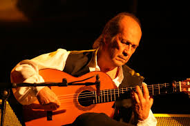

El expresidente de la Junta de Andalucía Manuel Chaves ha destacado este sábado, cuando ha acudido a despedir a Paco de Lucía, el genio del flamenco que falleció el pasado miércoles en México a los 66 años de edad, que "su música será eterna, por muchos años y por muchos siglos".

En declaraciones a los medios en la capilla ardiente que ha habilitado el Ayuntamiento de Algeciras (Cádiz) en el salón de Plenos, Chaves ha dicho que es "un día muy triste" porque "se nos ha ido una persona sublime que colocó la guitarra flamenca a unos niveles insuperables en todo el mundo".
Además, está convencido de que Paco de Lucía "pasará a la historia como uno de los grandes guitarristas del mundo de cualquier género musical" y, a su juicio, "aunque en Andalucía tenemos muy buenos guitarristas, van a pasar muchos años para que vuelva a aparecer un músico como él", ha lamentado Chaves.
Desde esta madrugada son miles los vecinos que ha asistido a dar su último adiós al maestro algecireño en el Ayuntamiento de la ciudad. Mientras, será a las 12,30 horas, según informó el Consistorio en un comunicado oficial, cuando se traslade el féretro desde el salón de plenos hasta la Iglesia de Nuestra Señora de la Palma, ubicada a escasos metros de la Casa Consistorial. A las 13,00 horas comenzará la misa de cuerpo presente y posteriormente, ya en la intimidad, Paco de Lucía será enterrado en el cementerio antiguo de su localidad natal, junto a sus padres.
Madrid celebrará este año un Carnaval inspirado en el mundo de la pintura. Sobre todo en El Greco con motivo del 400 aniversario de su muerte. Como reclamo, los carteles con el famoso "caballero de la mano en el pecho", cubierto de confeti y serpentinas, se encuentran desde hace días por toda la ciudad.
Como pregonero, el Ayuntamiento de Madrid ha fichado al showman y actor gaditano Álex O'Dogherty. El actor aún no tiene claro el enfoque que quiere dar a su discurso. "En Cádiz todo vale, lo tiene que aguantar la alcaldesa cuando se lo dicen todo a la cara. Allí puedes decir casi lo que quieras, no sé si aquí es el mismo espíritu. Tengo que saber dónde estoy", ha comentado O'Dogherty ante la prensa.
El pregón será a las 18:00 en la Plaza de la Villa. Seguidamente, las celebraciones se trasladarán hasta el Parque del Retiro, desde donde partirá el Gran Desfile de Carnaval. El recorrido continuará por la Calle de Alcalá y terminará en la Plaza de Cibeles. Allí, a las 9 de la noche, habrá un espectáculo de fuegos artificiales y una actuación musical a cargo de Sinfonity, la primera orquesta sinfónica de guitarras eléctricas del mundo.
Cortes de tráfico y refuerzos en la EMT
El Ayuntamiento de Madrid ha anunciado cortes de tráfico entre las 17:00 y las 00:00 en la Calle Antonio Maura, desde la Plaza de la Lealtad hasta la calle Alfonso XII y en el lateral del Paseo del Prado, desde la plaza de la Lealtad hasta la plaza de Cibeles. Además, la EMT dispondrá de dieciséis autobuses más, que se incorporarán a las líneas con mayor demanda.
Más de 200 espectáculos
Las celebraciones carnavaleras continuarán en la capital hasta el próximo miércoles. Hasta entonces tendrán lugar más de 200 actuaciones con la participación de 140 compañías. El presupuesto es un 25% inferior al del año pasado. En total, asciende a 390.000 euros. El Ayuntamiento de Madrid cree que los festejos congregarán a más de 600.000 espectadores.
Sergio Martín-Serrano Delgado